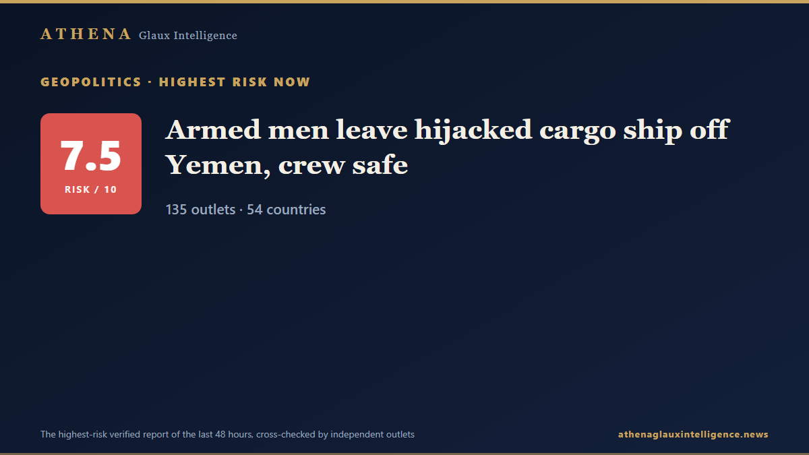
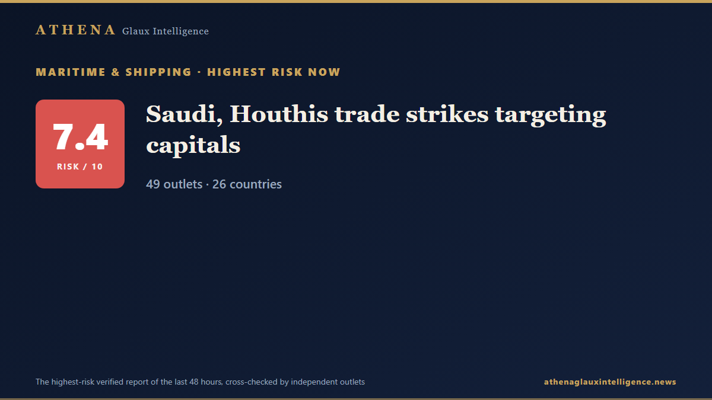
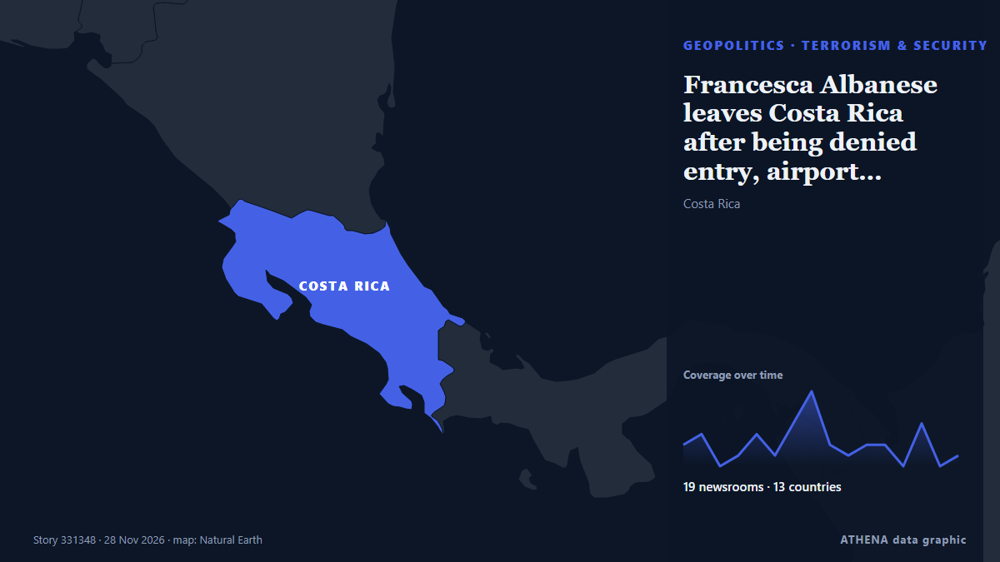

Risque 7.5Élevé
Géopolitique, économie et transport maritime — recoupés entre pays.
Géopolitique
Toute la géopolitique >Risque le plus élevé maintenant

Risque en hausseHausse au cours des dernières 24 heures
Maritime et transport
Bureau maritime >Risque le plus élevé maintenant
Risque 7.4Élevé
Saudi, Houthis trade strikes targeting capitals
Voir les preuves ›
Liste de surveillanceDétroits, ports et autres reportages maritimes
- Strait of HormuzPerturbéattack / strike · risk 6.6 · 140 newsrooms (72 h)
- Kerch Strait / Black SeaPerturbéattack / strike · risk 7.5 · 138 newsrooms (72 h)
- Bab el-Mandeb / Red SeaPerturbéattack / strike · risk 7.5 · 138 newsrooms (72 h)
Chaque titre, vérifié dans plusieurs pays.
ATHENA Glaux suit 742 médias dans le monde. Une information devient un événement vérifié seulement lorsque des médias indépendants la rapportent. Chaque événement indique qui l'a publiée en premier et un score de risque avec ses raisons.
1 192événements en 24 h
742médias suivis
44minutes entre deux mises à jour
Séisme ou inondation près de chez vous cette semaine ?
Saisissez votre ville et voyez les séismes, inondations, tempêtes et alertes officielles à proximité, avec une liste du kit d'urgence 72 heures. Gratuit, sans inscription, et votre lieu reste sur votre appareil.
Des articles arrivent de médias indépendants : quand deux se rejoignent sur la même histoire, un événement vérifié naît.
Comment ATHENA vérifie une information
- CollecterLes reportages arrivent de médias indépendants dans de nombreux pays.
- CroiserQuand deux médias se rejoignent sur la même information, elle devient un événement vérifié.
- ExpliquerChaque événement montre qui était le premier, jusqu'où il s'est propagé et pourquoi le risque est ce qu'il est.
Perspectives mondiales des risques
Bilans hebdomadaires et mensuels : les événements les plus à risque, les tendances par domaine et par région, et ce qu'il faut surveiller.
Lire les perspectives ›Briefing quotidien
Les dix événements mondiaux les plus importants du jour, les risques en hausse et les nouveaux événements, chaque chiffre expliqué.
Ouvrir le briefing du jour ›
GéopolitiqueFrancesca Albanese leaves Costa Rica after being denied entry, airport detention
Costa Rica has blocked UN rapporteur Francesca Albanese from entering the country, citing an international alert regarding her alleged links to terrorist activities. de Arab News
6.9Importance
3.8Risque · modéré
88%Confiance
Les titres sont affichés en anglais, tels que publiés.
Géopolitique
CHINA DIARIES: Where Students Build the Future
I must confess, I was not quite prepared for what I saw during my visit to the Qinling Workshop at Xi’an Aeronautical Vocational and Technical College in China. de Daily Trust
Économie et marchés
Trump shares Thanksgiving post claiming GDP figures released before midterm elections were 'fake'
The Commerce Department revised third-quarter GDP growth to 4.3% from 3.4% on Wednesday in what Trump calls a "massive, and purposeful, error." de The Jerusalem Post
Sponsorisé
Cybernetics and Artificial Intelligence Lab Welcome to the Cybernetics and Artificial Intelligence Laboratory, established at the Department of Business Administration of the National and Kapodistrian University of Athens. The lab is headed by Professor Dimitrios Thomakos. The lab aims to do research that can be published in top venues. Our research uses tools and methods of Artificial Intelligence, and lies in the following areas: - Forecasting - Decision making - Cyber security - Finance We are always looking forward to collaborating with exceptional students!
En savoir plus – Cybernetics and Artificial Intelligence LabNavires dans les détroits du monde en ce moment
Comptages AIS en direct. Touchez ou survolez une barre pour le détail.
Derniers reportages
BJP pushing India towards dictatorship, 850 figure will murder democracy, says Rahul Gandhi
Iran’s supreme leader adviser warns Iraq not to become ‘tool of Trump’
Sea Tribunal rejects Argentina’s request to halt Malvinas oil drilling
Dep. Interior Minister Liakos Resigns Amid Controversy Over Awarded Contracts
"Our 3 MPs Will Vote In Favour": BRS Announces Support For Delimitation Bill
Upside risks to inflation likely in coming months on festive, wedding demand: FinMin report
Australia’s conservatives win landslide victory in bellwether state
‘Jess we can’: Inside the room where Wilson made history
Énergie et environnement
Storms clear for first ever postponed Macy’s Thanksgiving Day parade
New York tradition kicked off two days late as east coast still recovering from power outages and travel disruptions The rescheduled Macy’s Thanksgiving Day parade kicked off on Saturday in New York… de The Guardian
Technologie et cyber
Hackers breach US Air Force flagship Cloud One computing platform
Currently unknown what the full scope of intrusion is, the hackers identity, whether any data has been stolen. de Express Tribune
Commerce et industrie
Norwegian Norse Atlantic airline files for bankruptcy
Norwegian low-cost carrier Norse Atlantic, hit by surging jet fuel prices, said Friday that it was filing for bankruptcy, just hours after it saw its aircraft leasing contracts terminated. de The Local Norway
Géopolitique, politique et sécurité
Plus ݃lections et politique
Tanker with 7,000 tonnes of diesel capsizes near Spain’s Ibiza island
Valencia, Spain (Ports Europe) November 28, 2026 – The Malta-flagged oil and chemical tanker Med Emre, carrying up to 7,000 tonnes of diesel, capsized on November 23. de Ports Europe
- Guerres et conflits
Airstrike on Myanmar wedding venue kills around 20: witnesses
- Diplomatie et sommets
Ireland hit with more bomb threats as security preparations ramp up for EU summit
- Élections et politique
Israel’s Eisenkot accuses Netanyahu’s party of stalling coalition talks
- Guerres et conflits
Iran denies responsibility for Kuwait drone strike that killed two Italians
Économie, finance et marchés
Plus ›Banques et crédit
21 Settler Attacks on Palestinians in West Bank in 24 Hours
The Palestinian General Authority of Civil Affairs announced on Saturday that it had documented 21 attacks by Israeli settlers against Palestinians and their property across governorates in the… de Jordan News
- Inflation et taux d'intérêt
US Black Friday spending set to rise despite inflation fears
- Crypto et actifs numériques
Binance gets preliminary approval to establish Asia hub in Bhutan
- Banques et crédit
Iran rial falls to near 3 million to US dollar
- Banques et crédit
US regulators shut United Fidelity Bank in biggest bank failure since 2024
Commerce, industrie et infrastructures
Plus ›Transport maritime et ports
Cargo vessel involved in incident with military forces in Gulf of Oman
The United Kingdom Maritime Trade Operations (UKMTO) has received a report of an incident involving a cargo vessel and military forces in the Gulf of Oman.In an advisory numbered 2... de Arab Times
- Droits de douane et contrôles
UK policewomen told to dress modestly around Muslims, prompting Nigel Farage's two-tier policing attack
- Infrastructures critiques
Russian strike hits critical infrastructure in Kyiv, threatening power and water disruptions
- Commerce et accords
Russia bans buckwheat exports for six months
- Aérien, rail et route
Two American Airlines planes clip wings while taxiing at Washington airport
Énergie, ressources et environnement
Plus ›Météo extrême et catastrophes
El Nino-linked deluges flood cities in Peru, Ecuador
Ecuador reported 34 deaths and 47,000 people affected by heavy rains as at Nov 27. de The Straits Times
- Climat et politique climatique
COP31 exposed the cracks in climate negotiation, not in cooperation
- Électricité
Russian Forces Kill Last Resident of Kherson Village Tiahynka
- Sécurité énergétique
Gazprom, BOTAS extend Russian gas supply deal by 3 years
- Pétrole et gaz
Iran launches 10 natural gas industry projects with $350m investment
Technologie, IA et cybersécurité
Plus ›Logiciels et cloud
Belgium orders Google to halt data center work over missing permit
BRUSSELS: Belgian authorities have ordered Google to suspend construction of a data center in the south of the country because of a lack of proper planning permission, a regional official said Friday. de Arab News
- Cybersécurité
Latest on DWP State Pensions and benefits online services after ‘cyber incident’
- Cybersécurité
US says systems secure after reports of Air Force hack
- Cybersécurité
UK pensions department says it was targeted in cyberattack
- Espace et satellites
Musk Says Google Is Interested in Renting More Computing Capacity from SpaceX
Entreprises et investissement
Plus ›Stratégie d'entreprise
New growth drivers fuel China's industrial profit gains
China industrial profits, October Year-to-date: 16.0% y/y prior (jany - September) 15.5% October alone: 20.1% y/y prior 14.4% Profit growth at China's industrial firms accelerated sharply in October… de investingLive (ForexLive)
- Stratégie d'entreprise
WhatsApp announces new e-SIM feature for international travel
- Secteurs et risques
The 29 Very Best Amazon Black Friday Deals (2026): Up to 60% Off
- Secteurs et risques
Maternal, newborn death prevention research receives 1pc of global share
- Secteurs et risques
Egypt’s Ambassador to Tanzania meets Zanzibar President
Accidents et urgences
Plus ›Accidents et urgences
'Hero' gran dies saving two-year-old grandson's life in 'extraordinary act of bravery'
Barbara Barganska, 62, died when an HGV collided with her at traffic lights. de Liverpool Echo
- Accidents et urgences
8 Killed, Pilot Survives In Peru Military Helicopter Crash
- Accidents et urgences
Some bootleg alcohol in Iran is poisoned on purpose, top psychiatrist warns
- Accidents et urgences
Karachi building collapse: Death toll rises to 11 as two more bodies recovered
- Accidents et urgences
Rescue operation completed in Nizhyn after Russian attack: death toll rises to seven – video
Trois façons de lire aujourd'hui
Commencez par celle qui convient à votre tempsÉvénements vérifiés
Classés selon l'ampleur de la couverture
- Nvidia’s chip financing can’t sustain the AI boom alone, LBS professor says151 médias · 51 paysRisque 3.8
- Iran Navy exercises control from Strait of Hormuz to northern Indian Ocean: Spokesperson140 médias · 49 paysRisque 6.6
- Zelensky objects to Trump calling Putin "friend"74 médias · 34 paysRisque 4.5
- At least 9 civilians killed in Ukraine as Russia claims near-record drone interceptions58 médias · 32 paysRisque 7.0
- Oil-rich Saudi Arabia bets on futuristic luxury cars to build an EV industry75 médias · 31 paysRisque 4.4
Bureau d'évaluation
Posez une question et lisez une évaluation argumentée d'un sujet majeur, avec ce qui la démentirait.
Ouvrir le Bureau d'évaluation ›Aujourd'hui en chiffres
| 19:00 | 506 |
|---|---|
| 20:00 | 483 |
| 21:00 | 385 |
| 22:00 | 691 |
| 23:00 | 336 |
| 00:00 | 368 |
| 01:00 | 342 |
| 02:00 | 286 |
| 03:00 | 287 |
| 04:00 | 330 |
| 05:00 | 196 |
| 06:00 | 205 |
| 07:00 | 318 |
| 08:00 | 325 |
| 09:00 | 304 |
| 10:00 | 280 |
| 11:00 | 472 |
| 12:00 | 415 |
| 13:00 | 805 |
| 14:00 | 487 |
| 15:00 | 532 |
| 16:00 | 570 |
| 17:00 | 505 |
| 18:00 | 535 |
Risque des événements du jour
Géopolitique85Commerce et industrie25Énergie et environnement22Technologie et cyber16Économie et marchés15Entreprises11Maritime3
Signaux émergents
- Hausse soudaine · ActifPalau-flagged
- Hausse soudaine · ActifArmed
- Hausse soudaine · ActifAfghanistan
- Hausse soudaine · ActifStalin
- Hausse soudaine · ActifRAF
Alertes officielles
- Orange flood alert in BoliviaOrange · GDACS ·
- M 6.5 - Vanuatu regionM6.5 · USGS ·
Restez informé
ATHENA Weekly Risk Picture
Les plus grands risques géopolitiques, économiques et maritimes de la semaine, recoupés et notés.
Chaque vendredi à 8 h (heure d'Athènes) · gratuit · en anglais
S'abonner gratuitementATHENA sur Telegram
Les nouvelles dès leur publication : les événements urgents de risque 6 ou plus, un récapitulatif horaire, les mises à jour des suivis de risque et le briefing quotidien à 10 h.
Gratuit · publications en anglais · désinscription à tout moment
Rejoindre le canalL'inscription est gérée par beehiiv avec double confirmation : rien de ce que vous saisissez n'est envoyé à ATHENA, et chaque numéro contient un lien de désinscription.
Suivi des risques
Plus ›Détroit d'OrmuzRisque 6.611 nouveaux événements cette semaine · en baisse (14 la semaine précédente)Mer RougeRisque 7.317 nouveaux événements cette semaine · en baisse (38 la semaine précédente)Grèce et TurquieRisque 5.28 nouveaux événements cette semaine · en hausse (6 la semaine précédente)ChypreRisque 5.212 nouveaux événements cette semaine · en baisse (20 la semaine précédente)Sanctions contre la RussieRisque 3.812 nouveaux événements cette semaine · en baisse (18 la semaine précédente)Guerre en UkraineRisque 7.9225 nouveaux événements cette semaine · en baisse (268 la semaine précédente)Proche-Orient : Israël et GazaRisque 7.382 nouveaux événements cette semaine · stable par rapport à la semaine précédenteTaïwanRisque 4.613 nouveaux événements cette semaine · stable par rapport à la semaine précédentePétrole et gazRisque 2.036 nouveaux événements cette semaine · stable par rapport à la semaine précédenteCanal de SuezRisque 0.01 nouvel événement cette semaine · en baisse (3 la semaine précédente)Détroits turcsRisque 0.00 nouvel événement cette semaineCanal de PanamaRisque 0.01 nouvel événement cette semaine · en hausse (0 la semaine précédente)Flotte fantômeRisque 0.01 nouvel événement cette semaine · en baisse (3 la semaine précédente)Navigation en mer NoireRisque 2.61 nouvel événement cette semaine · en baisse (4 la semaine précédente)Banques centrales et tauxRisque 4.252 nouveaux événements cette semaine · stable par rapport à la semaine précédenteÉconomie grecqueRisque 1.38 nouveaux événements cette semaine · stable par rapport à la semaine précédenteÉnergie en Méditerranée orientaleRisque 0.03 nouveaux événements cette semaine · stable par rapport à la semaine précédenteBalkansRisque 4.719 nouveaux événements cette semaine · stable par rapport à la semaine précédenteMigration en MéditerranéeRisque 3.54 nouveaux événements cette semaine · en hausse (3 la semaine précédente)
Risques mondiaux — semaine 48, 2026 (23–29 nov.) ›
Dans le monde
Asie du Sud-EstTrump says trade deal reached between the U.S. and the Philippines
60 événements
Moyen-Orient et Afrique du NordOil-rich Saudi Arabia bets on futuristic luxury cars to build an EV industry
59 événements
EuropeWarning for EV drivers without private driveways under Andy Burnham
59 événements
Amérique du NordStorms clear for first ever postponed Macy’s Thanksgiving Day parade
56 événements
Asie du Sud‘What pressure?’: Salahuddin on Hasina’s reported plan to return on December 16
54 événements
Afrique subsaharienneMusk pledges two SpaceX shares for every US child
45 événements
Asie de l'EstSouth Korea monitors reports of possible China visit by North Korean leader
42 événements
Russie et EurasieRussian authorities say over 1,200 Ukrainian drones shot down in new nighttime attack
41 événements
OcéanieForum Chair backs Australia’s COP31 role as Albanese defends conference spending
40 événements
Amérique latine et CaraïbesInternational court rejects Argentina’s bid to block Falklands oil drilling
29 événements